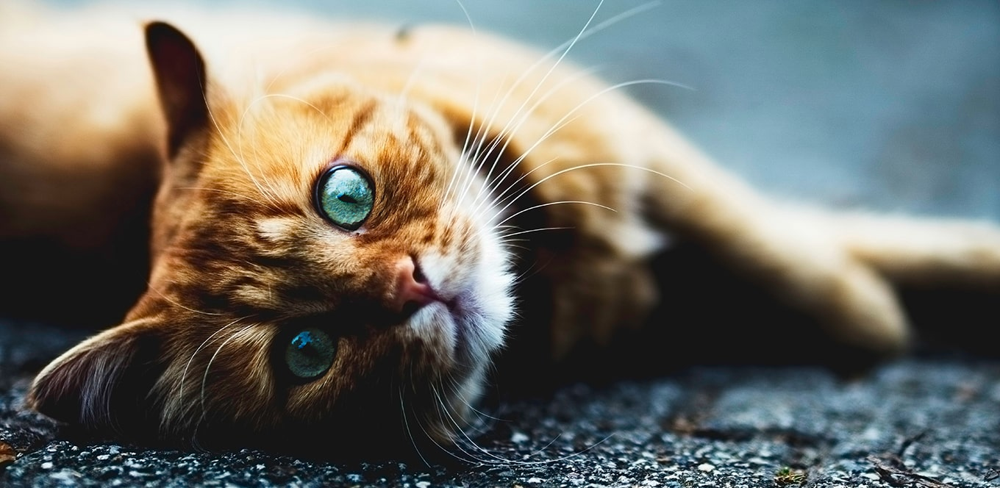
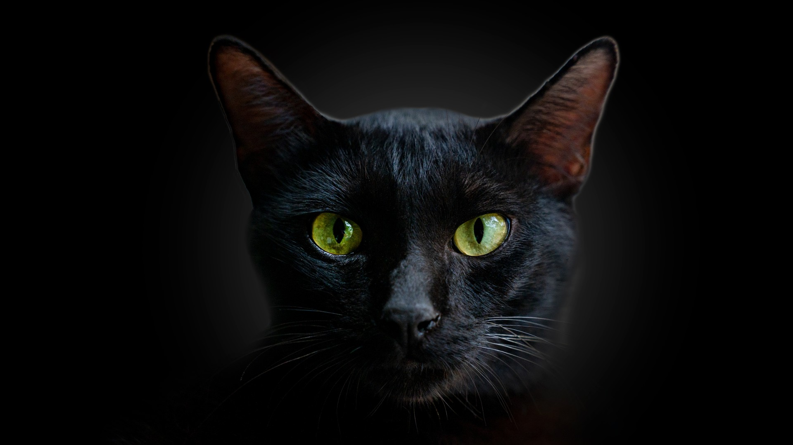
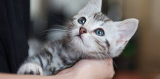

Macskák
A macska kisebb termetű húsevő emlős.
  Nagyon fontos figyelembe venni, hogy a lakásban tartott macskákat is oltani kell! Akár úgy is megfertőződhetnek rájuk veszélyes betegségekkel, hogy el sem hagyják otthonukat (pl.: cipőtalpon bevitt kórokozók esetében).
Macskafajták